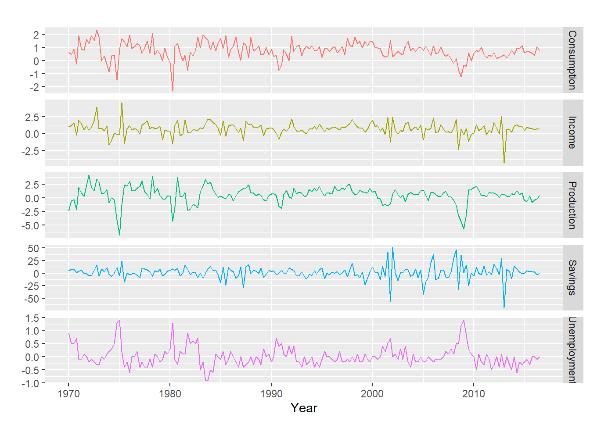
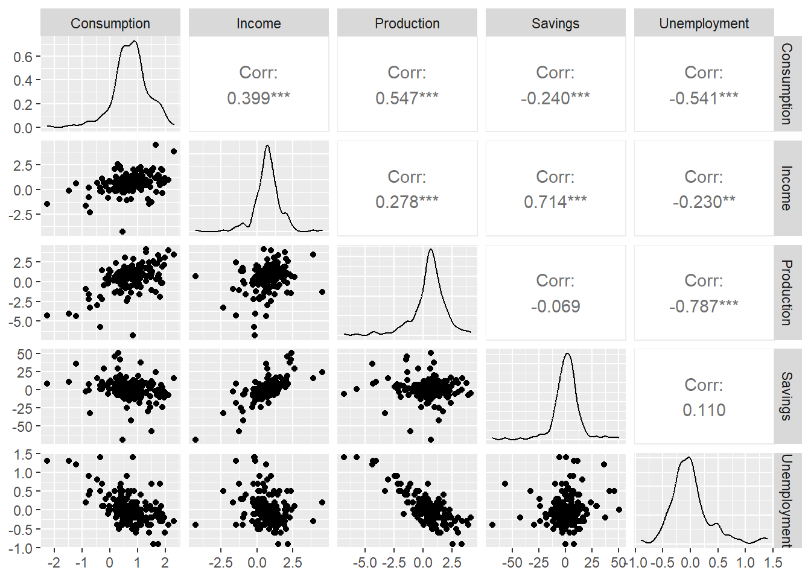
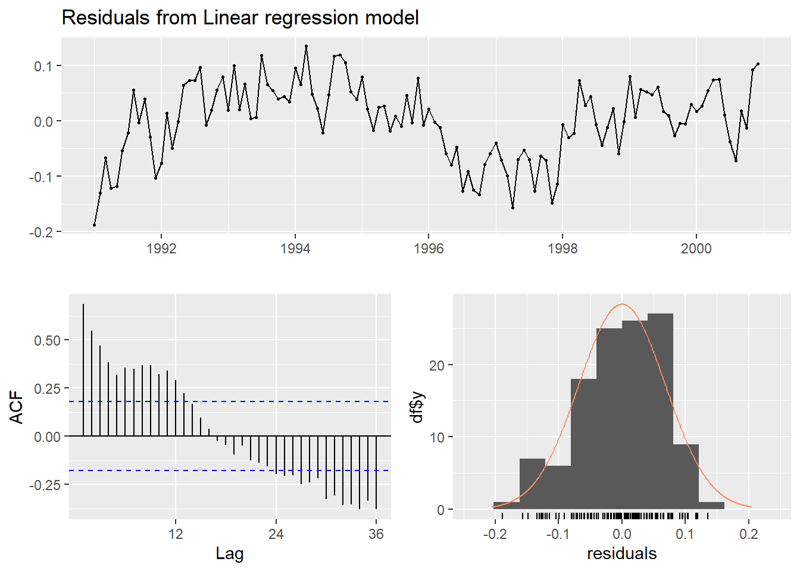
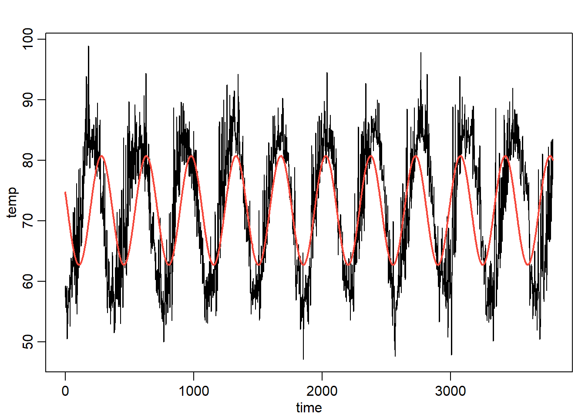

library(ggplot2)
library(forecast)
library(fpp2)
library(astsa)
library(car)
library(gamair)
library(mgcv)Tema IV: Regresión con series de tiempo
Curso: Análisis de series temporales
1 librerías
2 Modelo de Regresión
Cambios porcentuales trimestrales (tasas de crecimiento) del gasto de consumo personal real (Y) e ingresos disponibles(X), para EE.UU. desde 1970 a 2016.
data(uschange)
autoplot(uschange[,1:5], facets = TRUE, colour=TRUE) +
ylab("") + xlab("Year") +
guides(colour="none")
uschange %>%
as.data.frame() %>%
GGally::ggpairs()Registered S3 method overwritten by 'GGally':
method from
+.gg ggplot2
mod0 <- lm(
Consumption ~ Income + Production + Unemployment + Savings,
data=uschange)
summary(mod0)
Call:
lm(formula = Consumption ~ Income + Production + Unemployment +
Savings, data = uschange)
Residuals:
Min 1Q Median 3Q Max
-0.88296 -0.17638 -0.03679 0.15251 1.20553
Coefficients:
Estimate Std. Error t value Pr(>|t|)
(Intercept) 0.26729 0.03721 7.184 1.68e-11 ***
Income 0.71449 0.04219 16.934 < 2e-16 ***
Production 0.04589 0.02588 1.773 0.0778 .
Unemployment -0.20477 0.10550 -1.941 0.0538 .
Savings -0.04527 0.00278 -16.287 < 2e-16 ***
---
Signif. codes: 0 '***' 0.001 '**' 0.01 '*' 0.05 '.' 0.1 ' ' 1
Residual standard error: 0.3286 on 182 degrees of freedom
Multiple R-squared: 0.754, Adjusted R-squared: 0.7486
F-statistic: 139.5 on 4 and 182 DF, p-value: < 2.2e-16mod0 <- tslm(
Consumption ~ Income + Production + Unemployment + Savings,
data=uschange)
summary(mod0)
Call:
tslm(formula = Consumption ~ Income + Production + Unemployment +
Savings, data = uschange)
Residuals:
Min 1Q Median 3Q Max
-0.88296 -0.17638 -0.03679 0.15251 1.20553
Coefficients:
Estimate Std. Error t value Pr(>|t|)
(Intercept) 0.26729 0.03721 7.184 1.68e-11 ***
Income 0.71449 0.04219 16.934 < 2e-16 ***
Production 0.04589 0.02588 1.773 0.0778 .
Unemployment -0.20477 0.10550 -1.941 0.0538 .
Savings -0.04527 0.00278 -16.287 < 2e-16 ***
---
Signif. codes: 0 '***' 0.001 '**' 0.01 '*' 0.05 '.' 0.1 ' ' 1
Residual standard error: 0.3286 on 182 degrees of freedom
Multiple R-squared: 0.754, Adjusted R-squared: 0.7486
F-statistic: 139.5 on 4 and 182 DF, p-value: < 2.2e-16autoplot(uschange[,'Consumption'], series="Data") +
forecast::autolayer(fitted(mod0), series="Fitted") +
xlab("Year") + ylab("") +
ggtitle("Cambio porcentual de gastos de consumo en EE.UUU ") +
guides(colour=guide_legend(title=" "))checkresiduals(mod0)
Breusch-Godfrey test for serial correlation of order up to 8
data: Residuals from Linear regression model
LM test = 14.874, df = 8, p-value = 0.061633 Modelos de tendencia
3.1 Ejemplo con graduados de ITCR de 1975 a 2002
itcrgrad<-read.csv("ITCR.csv",sep=",")
y<-ts(itcrgrad$graduados,start=1975)
autoplot(y) 
3.2 Crear variables independientes
tiempo<-seq(1,length(y))
tiempo2<-tiempo^2
datos.itcrgrad<-data.frame(y,tiempo,tiempo2)
mod1<-lm(y~tiempo+tiempo2,datos.itcrgrad)
summary(mod1)
Call:
lm(formula = y ~ tiempo + tiempo2, data = datos.itcrgrad)
Residuals:
Min 1Q Median 3Q Max
-117.932 -49.683 4.506 43.234 155.390
Coefficients:
Estimate Std. Error t value Pr(>|t|)
(Intercept) 127.0021 43.6818 2.907 0.00753 **
tiempo -12.7887 6.9427 -1.842 0.07736 .
tiempo2 1.5612 0.2323 6.720 4.83e-07 ***
---
Signif. codes: 0 '***' 0.001 '**' 0.01 '*' 0.05 '.' 0.1 ' ' 1
Residual standard error: 71.61 on 25 degrees of freedom
Multiple R-squared: 0.944, Adjusted R-squared: 0.9395
F-statistic: 210.6 on 2 and 25 DF, p-value: 2.268e-16mod.ts1<-tslm(y~trend+trend^2) #note la salida no incluye al tendencia al cuadrado.
summary(mod.ts1)
Call:
tslm(formula = y ~ trend + trend^2)
Residuals:
Min 1Q Median 3Q Max
-183.89 -78.69 -23.75 90.52 273.76
Coefficients:
Estimate Std. Error t value Pr(>|t|)
(Intercept) -99.373 45.678 -2.175 0.0389 *
trend 32.486 2.752 11.805 6.03e-12 ***
---
Signif. codes: 0 '***' 0.001 '**' 0.01 '*' 0.05 '.' 0.1 ' ' 1
Residual standard error: 117.6 on 26 degrees of freedom
Multiple R-squared: 0.8428, Adjusted R-squared: 0.8367
F-statistic: 139.3 on 1 and 26 DF, p-value: 6.026e-12mod.ts2<-tslm(y~trend+I(trend^2))
summary(mod.ts2)
Call:
tslm(formula = y ~ trend + I(trend^2))
Residuals:
Min 1Q Median 3Q Max
-117.932 -49.683 4.506 43.234 155.390
Coefficients:
Estimate Std. Error t value Pr(>|t|)
(Intercept) 127.0021 43.6818 2.907 0.00753 **
trend -12.7887 6.9427 -1.842 0.07736 .
I(trend^2) 1.5612 0.2323 6.720 4.83e-07 ***
---
Signif. codes: 0 '***' 0.001 '**' 0.01 '*' 0.05 '.' 0.1 ' ' 1
Residual standard error: 71.61 on 25 degrees of freedom
Multiple R-squared: 0.944, Adjusted R-squared: 0.9395
F-statistic: 210.6 on 2 and 25 DF, p-value: 2.268e-16par(mfrow = c(1,1))
e<-mod1$residuals3.3 Normalidad
hist(e)shapiro.test(e)
Shapiro-Wilk normality test
data: e
W = 0.97509, p-value = 0.72113.4 Homoscedasticidad
ts.plot(e)
lmtest::bptest(mod1)
studentized Breusch-Pagan test
data: mod1
BP = 1.0404, df = 2, p-value = 0.59443.5 Autocorrelación
lag1.plot(e)
acf(mod1$residuals)
durbinWatsonTest(mod1) #solamente considera un rezago lag Autocorrelation D-W Statistic p-value
1 0.1488158 1.576164 0.148
Alternative hypothesis: rho != 0checkresiduals(mod1)
Breusch-Godfrey test for serial correlation of order up to 6
data: Residuals
LM test = 3.9215, df = 6, p-value = 0.68734 Regresión con series estacionales
turistas<-read.csv("turistas.csv",sep=";")
y<-ts(turistas$turistas,start=c(1991,1),frequency=12)4.1 transformacion logarítmica
w<-log(y)
autoplot(y) autoplot(w)tiempo<-seq(1,length(y))
tiempo2<-tiempo^2
mes<-rep(seq(1,12),10)
mes<-as.factor(mes)
datos1<-data.frame(w,tiempo,tiempo2,mes)
mod1<-lm(w~tiempo+tiempo2+mes,datos1)
summary(mod1)
Call:
lm(formula = w ~ tiempo + tiempo2 + mes, data = datos1)
Residuals:
Min 1Q Median 3Q Max
-0.188378 -0.048245 0.007514 0.052592 0.135323
Coefficients:
Estimate Std. Error t value Pr(>|t|)
(Intercept) 1.094e+01 2.940e-02 372.182 < 2e-16 ***
tiempo 8.617e-03 7.707e-04 11.181 < 2e-16 ***
tiempo2 -1.992e-05 6.169e-06 -3.229 0.001654 **
mes2 -1.013e-01 3.243e-02 -3.125 0.002297 **
mes3 -1.181e-01 3.243e-02 -3.641 0.000422 ***
mes4 -3.467e-01 3.243e-02 -10.690 < 2e-16 ***
mes5 -5.050e-01 3.244e-02 -15.568 < 2e-16 ***
mes6 -4.243e-01 3.244e-02 -13.077 < 2e-16 ***
mes7 -2.037e-01 3.245e-02 -6.278 7.65e-09 ***
mes8 -3.326e-01 3.246e-02 -10.248 < 2e-16 ***
mes9 -6.091e-01 3.247e-02 -18.760 < 2e-16 ***
mes10 -5.293e-01 3.248e-02 -16.299 < 2e-16 ***
mes11 -3.263e-01 3.249e-02 -10.043 < 2e-16 ***
mes12 -1.042e-01 3.250e-02 -3.207 0.001775 **
---
Signif. codes: 0 '***' 0.001 '**' 0.01 '*' 0.05 '.' 0.1 ' ' 1
Residual standard error: 0.07251 on 106 degrees of freedom
Multiple R-squared: 0.9439, Adjusted R-squared: 0.937
F-statistic: 137.3 on 13 and 106 DF, p-value: < 2.2e-16levels(datos1$mes) [1] "1" "2" "3" "4" "5" "6" "7" "8" "9" "10" "11" "12"datos2 <- within(datos1, mes <- relevel(mes, ref = 12))
levels(datos2$mes) [1] "12" "1" "2" "3" "4" "5" "6" "7" "8" "9" "10" "11"mod2 <- lm(w~tiempo+tiempo2+mes,datos2)
summary(mod2)
Call:
lm(formula = w ~ tiempo + tiempo2 + mes, data = datos2)
Residuals:
Min 1Q Median 3Q Max
-0.188378 -0.048245 0.007514 0.052592 0.135323
Coefficients:
Estimate Std. Error t value Pr(>|t|)
(Intercept) 1.084e+01 3.022e-02 358.594 < 2e-16 ***
tiempo 8.617e-03 7.707e-04 11.181 < 2e-16 ***
tiempo2 -1.992e-05 6.169e-06 -3.229 0.00165 **
mes1 1.042e-01 3.250e-02 3.207 0.00177 **
mes2 2.885e-03 3.249e-02 0.089 0.92940
mes3 -1.386e-02 3.248e-02 -0.427 0.67035
mes4 -2.425e-01 3.247e-02 -7.470 2.39e-11 ***
mes5 -4.008e-01 3.246e-02 -12.348 < 2e-16 ***
mes6 -3.201e-01 3.245e-02 -9.863 < 2e-16 ***
mes7 -9.952e-02 3.244e-02 -3.067 0.00274 **
mes8 -2.284e-01 3.244e-02 -7.041 1.98e-10 ***
mes9 -5.049e-01 3.243e-02 -15.565 < 2e-16 ***
mes10 -4.251e-01 3.243e-02 -13.108 < 2e-16 ***
mes11 -2.220e-01 3.243e-02 -6.847 5.09e-10 ***
---
Signif. codes: 0 '***' 0.001 '**' 0.01 '*' 0.05 '.' 0.1 ' ' 1
Residual standard error: 0.07251 on 106 degrees of freedom
Multiple R-squared: 0.9439, Adjusted R-squared: 0.937
F-statistic: 137.3 on 13 and 106 DF, p-value: < 2.2e-164.2 Pronóstico
mod1<-lm(w~tiempo+tiempo2+mes,datos1)
summary(mod1)
Call:
lm(formula = w ~ tiempo + tiempo2 + mes, data = datos1)
Residuals:
Min 1Q Median 3Q Max
-0.188378 -0.048245 0.007514 0.052592 0.135323
Coefficients:
Estimate Std. Error t value Pr(>|t|)
(Intercept) 1.094e+01 2.940e-02 372.182 < 2e-16 ***
tiempo 8.617e-03 7.707e-04 11.181 < 2e-16 ***
tiempo2 -1.992e-05 6.169e-06 -3.229 0.001654 **
mes2 -1.013e-01 3.243e-02 -3.125 0.002297 **
mes3 -1.181e-01 3.243e-02 -3.641 0.000422 ***
mes4 -3.467e-01 3.243e-02 -10.690 < 2e-16 ***
mes5 -5.050e-01 3.244e-02 -15.568 < 2e-16 ***
mes6 -4.243e-01 3.244e-02 -13.077 < 2e-16 ***
mes7 -2.037e-01 3.245e-02 -6.278 7.65e-09 ***
mes8 -3.326e-01 3.246e-02 -10.248 < 2e-16 ***
mes9 -6.091e-01 3.247e-02 -18.760 < 2e-16 ***
mes10 -5.293e-01 3.248e-02 -16.299 < 2e-16 ***
mes11 -3.263e-01 3.249e-02 -10.043 < 2e-16 ***
mes12 -1.042e-01 3.250e-02 -3.207 0.001775 **
---
Signif. codes: 0 '***' 0.001 '**' 0.01 '*' 0.05 '.' 0.1 ' ' 1
Residual standard error: 0.07251 on 106 degrees of freedom
Multiple R-squared: 0.9439, Adjusted R-squared: 0.937
F-statistic: 137.3 on 13 and 106 DF, p-value: < 2.2e-16try(
pronostico<-forecast(mod1) #error
)Error in forecast.lm(mod1) :
argument "newdata" is missing, with no defaultmod3<-tslm(w~trend+I(trend^2)+season)
summary(mod3)
Call:
tslm(formula = w ~ trend + I(trend^2) + season)
Residuals:
Min 1Q Median 3Q Max
-0.188378 -0.048245 0.007514 0.052592 0.135323
Coefficients:
Estimate Std. Error t value Pr(>|t|)
(Intercept) 1.094e+01 2.940e-02 372.182 < 2e-16 ***
trend 8.617e-03 7.707e-04 11.181 < 2e-16 ***
I(trend^2) -1.992e-05 6.169e-06 -3.229 0.001654 **
season2 -1.013e-01 3.243e-02 -3.125 0.002297 **
season3 -1.181e-01 3.243e-02 -3.641 0.000422 ***
season4 -3.467e-01 3.243e-02 -10.690 < 2e-16 ***
season5 -5.050e-01 3.244e-02 -15.568 < 2e-16 ***
season6 -4.243e-01 3.244e-02 -13.077 < 2e-16 ***
season7 -2.037e-01 3.245e-02 -6.278 7.65e-09 ***
season8 -3.326e-01 3.246e-02 -10.248 < 2e-16 ***
season9 -6.091e-01 3.247e-02 -18.760 < 2e-16 ***
season10 -5.293e-01 3.248e-02 -16.299 < 2e-16 ***
season11 -3.263e-01 3.249e-02 -10.043 < 2e-16 ***
season12 -1.042e-01 3.250e-02 -3.207 0.001775 **
---
Signif. codes: 0 '***' 0.001 '**' 0.01 '*' 0.05 '.' 0.1 ' ' 1
Residual standard error: 0.07251 on 106 degrees of freedom
Multiple R-squared: 0.9439, Adjusted R-squared: 0.937
F-statistic: 137.3 on 13 and 106 DF, p-value: < 2.2e-16pronostico<-forecast(mod3,h=12)
pronostico Point Forecast Lo 80 Hi 80 Lo 95 Hi 95
Jan 2001 11.69308 11.59176 11.79439 11.53732 11.84883
Feb 2001 11.59552 11.49401 11.69704 11.43945 11.75159
Mar 2001 11.58251 11.48078 11.68425 11.42611 11.73892
Apr 2001 11.35756 11.25560 11.45952 11.20080 11.51431
May 2001 11.20294 11.10074 11.30513 11.04582 11.36006
Jun 2001 11.28729 11.18484 11.38974 11.12979 11.44479
Jul 2001 11.51140 11.40870 11.61411 11.35351 11.66930
Aug 2001 11.38605 11.28307 11.48902 11.22774 11.54436
Sep 2001 11.11311 11.00986 11.21636 10.95437 11.27185
Oct 2001 11.19632 11.09278 11.29985 11.03714 11.35549
Nov 2001 11.40279 11.29895 11.50663 11.24315 11.56243
Dec 2001 11.62822 11.52407 11.73236 11.46811 11.78833autoplot(w) +
ylab("ln Y") +
autolayer(mod3$fitted.values, series = "ajustado") +
autolayer(pronostico, series = "pronostico")checkresiduals(mod3)
Breusch-Godfrey test for serial correlation of order up to 24
data: Residuals from Linear regression model
LM test = 69.582, df = 24, p-value = 2.529e-06y<-ts(turistas$turistas,start=c(1991,1),frequency=12)
y.train<-window(y,start=c(1991,1),end=c(1999,12))
y.test<-window(y,start=c(2000,1),end=c(2000,12))
mod4<-tslm(y.train~trend+I(trend^2)+season)
summary(mod4)
Call:
tslm(formula = y.train ~ trend + I(trend^2) + season)
Residuals:
Min 1Q Median 3Q Max
-16096.7 -3411.3 833.9 3542.2 15635.4
Coefficients:
Estimate Std. Error t value Pr(>|t|)
(Intercept) 6.285e+04 2.312e+03 27.188 < 2e-16 ***
trend 4.557e+02 6.746e+01 6.755 1.18e-09 ***
I(trend^2) -5.924e-01 5.994e-01 -0.988 0.325522
season2 -8.809e+03 2.552e+03 -3.452 0.000836 ***
season3 -1.006e+04 2.552e+03 -3.942 0.000156 ***
season4 -2.517e+04 2.552e+03 -9.860 3.65e-16 ***
season5 -3.402e+04 2.553e+03 -13.325 < 2e-16 ***
season6 -2.947e+04 2.553e+03 -11.540 < 2e-16 ***
season7 -1.574e+04 2.554e+03 -6.162 1.77e-08 ***
season8 -2.419e+04 2.555e+03 -9.470 2.46e-15 ***
season9 -3.947e+04 2.556e+03 -15.446 < 2e-16 ***
season10 -3.551e+04 2.556e+03 -13.890 < 2e-16 ***
season11 -2.476e+04 2.558e+03 -9.680 8.82e-16 ***
season12 -8.906e+03 2.559e+03 -3.481 0.000761 ***
---
Signif. codes: 0 '***' 0.001 '**' 0.01 '*' 0.05 '.' 0.1 ' ' 1
Residual standard error: 5414 on 94 degrees of freedom
Multiple R-squared: 0.9158, Adjusted R-squared: 0.9041
F-statistic: 78.6 on 13 and 94 DF, p-value: < 2.2e-16pronostico<-forecast(mod4,h=12)
pronostico Point Forecast Lo 80 Hi 80 Lo 95 Hi 95
Jan 2000 105476.42 97842.25 113110.58 93731.85 117220.99
Feb 2000 96993.44 89340.12 104646.77 85219.39 108767.49
Mar 2000 96067.58 88394.02 103741.15 84262.40 107872.77
Apr 2000 81283.94 73589.07 88978.81 69445.98 93121.90
May 2000 72754.64 65037.40 80471.87 60882.27 84627.00
Jun 2000 77627.00 69886.35 85367.64 65718.62 89535.38
Jul 2000 91675.80 83910.71 99440.89 79729.81 103621.80
Aug 2000 83540.16 75749.59 91330.73 71554.97 95525.36
Sep 2000 68577.97 60760.90 76395.04 56552.01 80603.93
Oct 2000 72856.77 65012.19 80701.35 60788.49 84925.05
Nov 2000 83927.02 76053.94 91800.11 71814.89 96039.16
Dec 2000 100091.16 92188.58 107993.74 87933.65 112248.67accuracy(pronostico) ME RMSE MAE MPE MAPE MASE
Training set 5.729326e-13 5050.477 4024.289 -0.3434747 6.726303 0.6524221
ACF1
Training set 0.623945accuracy(pronostico,y.test) ME RMSE MAE MPE MAPE MASE
Training set 5.729326e-13 5050.477 4024.289 -0.3434747 6.726303 0.6524221
Test set 4.766925e+03 8704.755 6962.741 4.0412577 7.106520 1.1288072
ACF1 Theil's U
Training set 0.6239450 NA
Test set 0.5177485 0.51563884.3 Modelos aditivos generalizados
data("cairo")
ctamm <- gamm(temp~s(day.of.year,bs="cc",k=20)+s(time,bs="cr"),
data=cairo,correlation=corAR1(form=~1|year))
pred<-fitted(ctamm$gam)
plot(cairo$temp~cairo$time,type="l", ylab="temp",xlab="time")
points(cairo$time,pred,type="l",col=2,lwd=2)plot(cairo$temp,xlab='Day',ylab='Brightness')x<-cairo$temp
x.spec <-mvspec(x,log="no")plot(x.spec)
frecuencia<-x.spec$freq[x.spec$spec==max(x.spec$spec)]
abline(v=frecuencia,col=2)1/frecuencia[1] 349.0909cos1<-cos(2*pi*frecuencia*cairo$time)
sin1<-sin(2*pi*frecuencia*cairo$time)
data=data.frame(x=x,time=cairo$time,cos=cos1,sen=sin1)
mod<-lm(x~cos1+sin1,data=data)
plot(cairo$temp~cairo$time,type="l", ylab="temp",xlab="time")
points(cairo$time,fitted(mod),type="l",col=2,lwd=2)